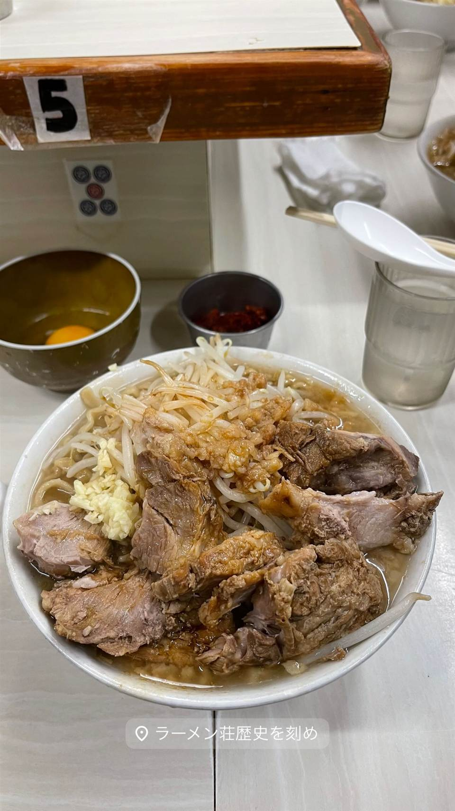

ラーメン · 二郎系(インスパイア) · 下新庄
★ また行きたい二郎系(インスパイア)で15位
ラーメン荘 歴史を刻め 本店
元プロ格闘家が創業した大阪の二郎インスパイア系
ラーメン荘 歴史を刻め
2010年に大阪・下新庄で誕生した、関西を代表する二郎インスパイア系ラーメン店。創業者の藤原大地氏はもと総合格闘技パンクラスの選手という異色の経歴を持ち、自家製麺のラーメンで夜や週末に行列を生んでいる。

TRIVIA
豆知識
- 創業者はもと総合格闘技パンクラスのプロ選手という異色の経歴の持ち主
- 俳優の尾上松也がテレビ番組「人生最高レストラン」で紹介した
REVIEWS
世間の評判
92.2ラーメンDB
ワシワシ極太麺と長蛇の行列
- 極太のワシワシ麺とキリッとしたカエシの効いたスープが評価されている
- ペッパーやフライドオニオンなど薬味の効果を評価する声も見られる
- 開店1時間前から並ぶ人も多く待ち時間はかなり長くなるという声が多い
ラーメンデータベース 口コミ103件・最新 2026-08
| 創業 | 2010年8月1日、大阪府東淀川区下新庄で創業 |
|---|---|
| 系譜 | 関西の二郎インスパイア系を代表する店の一つ |
| 看板 | 自家製麺の二郎系ラーメン |
| こだわり | 自家製麺にこだわる |
| どこから | 遠方 |
| 行くなら | 行列 |
| 営業時間 | 月 休み 火〜土 11:00-15:00、18:00-24:00 日 休み |
| 予算 | 昼 ～¥999 夜 ～¥999 |
| 場所 | 下新庄駅 大阪府大阪市東淀川区下新庄5-1-59 |
| メモ | 夜や週末は行列ができる人気店。運営は株式会社元気ですか |
食べたもの：二郎系ラーメン
NEARBY
近い店・同じ系統の店
-
 ★
二郎系(インスパイア) 新小岩駅
Hi-Fat Noodle BUTCHER'S
「脂と肉を武器にする」がコンセプトの二郎系2号店
昼 ¥1,000～¥1,999 夜 ¥1,000～¥1,999
★
二郎系(インスパイア) 新小岩駅
Hi-Fat Noodle BUTCHER'S
「脂と肉を武器にする」がコンセプトの二郎系2号店
昼 ¥1,000～¥1,999 夜 ¥1,000～¥1,999
-
 ★
二郎系(インスパイア) 高田馬場駅(早稲田口)
ラーメン 池田屋 高田馬場店
京都一乗寺発の二郎系が東京初進出、豚の旨味濃厚な一杯
昼 ¥1,000～¥1,999 夜 ¥1,000～¥1,999
★
二郎系(インスパイア) 高田馬場駅(早稲田口)
ラーメン 池田屋 高田馬場店
京都一乗寺発の二郎系が東京初進出、豚の旨味濃厚な一杯
昼 ¥1,000～¥1,999 夜 ¥1,000～¥1,999
-
 ★
二郎系(インスパイア) 東北沢駅／駒場東大前駅
千里眼（センリガン）
夏季限定の冷やし中華も人気の二郎系インスパイア
昼 ～¥999 夜 ～¥999
★
二郎系(インスパイア) 東北沢駅／駒場東大前駅
千里眼（センリガン）
夏季限定の冷やし中華も人気の二郎系インスパイア
昼 ～¥999 夜 ～¥999
-
 ★
二郎系(インスパイア) 大山
自家製麺 No11
富士丸出身の店主が繰り出す350g極太麺の二郎系
夜 ¥1,000～¥1,999
★
二郎系(インスパイア) 大山
自家製麺 No11
富士丸出身の店主が繰り出す350g極太麺の二郎系
夜 ¥1,000～¥1,999
-
 ★
二郎系(インスパイア) 東大前
ラーメン用心棒 本号
千里眼の系譜を継ぐ、濃厚豚骨醤油と極太麺のまぜそば
昼 ～¥999 夜 ¥1,000～¥1,999
★
二郎系(インスパイア) 東大前
ラーメン用心棒 本号
千里眼の系譜を継ぐ、濃厚豚骨醤油と極太麺のまぜそば
昼 ～¥999 夜 ¥1,000～¥1,999
-
 ★
二郎系(インスパイア) 大井町
ザ・ラーメン スモールアックス
二郎系なのに麺量250gと少なめで食べやすい一杯
昼 ～¥999 夜 ～¥999
★
二郎系(インスパイア) 大井町
ザ・ラーメン スモールアックス
二郎系なのに麺量250gと少なめで食べやすい一杯
昼 ～¥999 夜 ～¥999